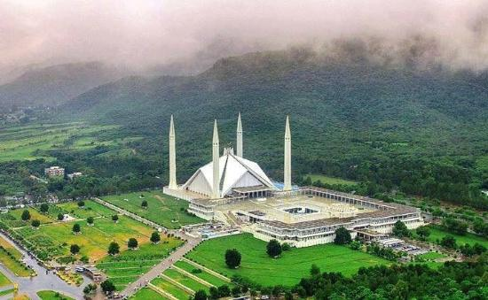

<div class="portfolio-single-load clearfix">
    <div class="custom-full-width-box">
        <div class="custom-container">
            <div class="custom-row align-items-center">
                <div class="custom-image-column">
                    
                </div>
                <div class="custom-text-column">
                    <h2 class="custom-heading">Qissa Khwani Bazaar</h2>
                    <p class="custom-paragraph">
                        Step back in time at Peshawar's historic Qissa Khwani Bazaar, known as the "Storytellers' Bazaar" for its centuries-old tradition of storytelling and entertainment. Established in the Mughal era, the bustling market was a hub of trade, culture, and folklore, where merchants from Central Asia, Persia, and India converged to buy and sell goods. Today, the bazaar retains its vibrant atmosphere, with narrow alleys lined with shops selling spices, textiles, and handicrafts, offering visitors a glimpse into Peshawar's rich cultural heritage.
                    </p>
                </div>
            </div>
        </div>
    </div><!-- .custom-full-width-box end -->

</div><!-- end single-project -->
